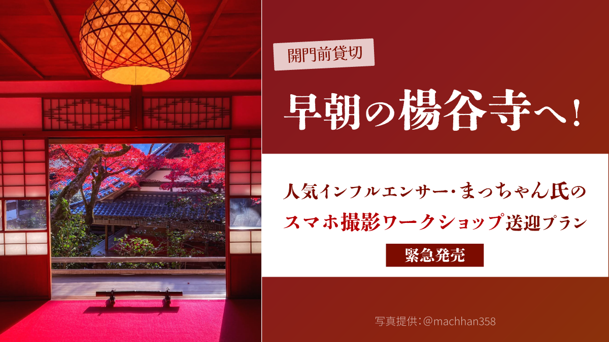
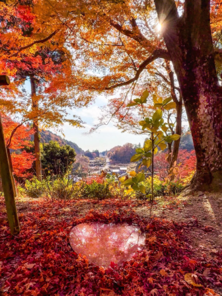
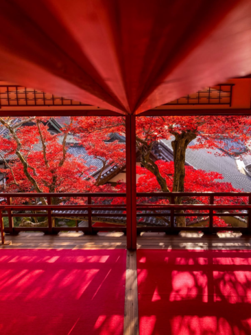
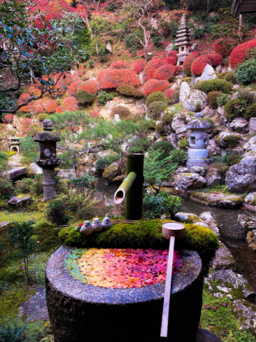
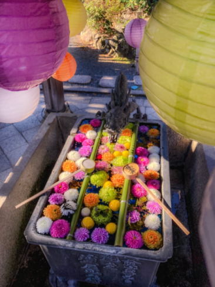
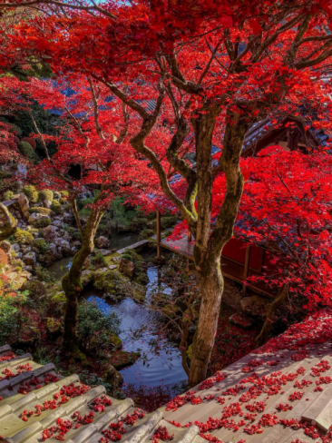

最新の情報は 公式サイトのツアーページ をご覧ください。
【緊急発売】早朝の楊谷寺へ！人気インフルエンサー・まっちゃん氏のスマホ撮影ワークショップ送迎プラン

※写真提供：@macchan358（まっちゃん）さん
※旅行代金には、撮影講習会費（おひとり様10,000円）は含まれておりません。事前にお寺の専用ページより予約・お申込みが必要です。
▼撮影講習会のお申込みはこちら
https://www.yanagidani.jp/taiken
※撮影講習会の予約・お支払いは、当ツアーのお申込みとは別に、お客様ご自身でお手続きをお願いいたします。
フォロワー数9万人超えの人気インフルエンサー・まっちゃん氏（@macchan358）を講師に迎え、11月28日限定で開催される「早朝の楊谷寺スマホ撮影ワークショップ」。
開門前の特別な時間に開催されるワークショップに合わせ、JR長岡京駅・阪急西山天王山駅から楊谷寺までの送迎プランをご用意しました！
舞台は、京都・西山に佇む花手水で有名な「柳谷観音 楊谷寺」。
今回は開門前の境内を特別貸切し、静寂に包まれた早朝の境内で、幻想的な写真の撮り方を直接学びます。
花手水や参道、上書院からの絶景をはじめ、ハートリフレクションや空のハートなど、楊谷寺ならではの撮影スポットを巡りながら、スマホで素敵な一枚を撮影するコツを伝授していただきます。
写真が好きな方はもちろん、スマホ撮影をもっと楽しみたい方や、SNSに素敵な写真を投稿してみたい方にもおすすめ！
この日、この時間だけの特別な撮影体験。
ぜひ、いつもとは違う早朝の楊谷寺で、心に残る一枚を撮影してみませんか？
イベントに参加される方は、ぜひMKタクシーの送迎プランをご利用ください♪
| 講師紹介 |
| 【@macchan358（まっちゃん）さん】Instagram |
| 🌟おすすめポイント |
| 🌄 早朝の移動も安心！MKタクシーの往復送迎付き！ JR長岡京駅・阪急西山天王山駅の2カ所から乗車場所を選択可能 早朝の公共交通機関での移動や駅からのアクセスを気にせず、イベントにご参加いただけます |
| 📱 フォロワー9万人超え！人気インフルエンサーから直接学ぶ まっちゃん氏を講師に迎え、スマホで幻想的な写真を撮影するコツを直接レクチャー 普段のスマホ撮影がもっと楽しくなる特別な機会です |
| 🍁 開門前の楊谷寺を特別貸切！ 一般拝観前の静かな境内で、花手水や上書院、ハートリフレクションなどの人気スポットをゆっくり撮影できます |
| 📸 1日限りの少人数限定イベント！ 11月28日だけの特別企画。撮影好きの方やスマホ写真をもっと楽しみたい方におすすめです。 |
行程
| 日時 | 場所 |
| 7:30 | JR長岡京駅（集合・出発） |
| 7:40 | 阪急西山天王山駅（集合・出発） |
| 8:00 | 柳谷観音 楊谷寺 |
| 9:45頃 | 阪急西山天王山駅（解散） |
| 9:55頃 | JR長岡京駅（解散） |
※渋滞等で、行程の入替や、予定通りの滞在時間をお取りすることができない場合がございます。予めご了承ください。
※気象状況により紅葉の見ごろが前後する場合があります。見ごろをお約束した日程ではありませんので予めご了承くださいませ。
写真イメージ





（写真：@macchan358さん）
【MKトラベルLINE公式アカウント】
MKトラベルの新規ツアー情報をLINEでお届けいたします

【各SNSでも京都の情報やツアー情報をお届けしています】


旅行条件
| ツアー番号 | T323MK |
| 出発地 | 京都市・長岡京市 |
| 添乗員／ガイド | なし（乗務員がその業務を代行いたします）／なし |
| 食事 | なし |
| 最少催行人数 | 4名（最大7名様限定） |
本ツアー参加者へのお願い
・撮影講習会の予約・お支払いは、当ツアーのお申込みとは別に、お客様ご自身でお手続きをお願いいたします。
（撮影講習会のお申込みはこちらhttps://www.yanagidani.jp/taiken）
・スマートフォンをご持参ください。
・本ツアーはスマートフォンでの撮影講座となります。
カメラでの撮影も可能ですが、講座内容はスマートフォン向けとなります。
・譲り合って撮影をお楽しみください。
・長時間同じ場所を占有しての撮影はご遠慮ください。
・フラッシュ撮影は、他のお客様のご迷惑となる場合がございますので、ご配慮をお願いいたします。
・境内の植物・装飾物にはお手を触れないようお願いいたします。
・立入禁止区域への侵入はご遠慮ください。
・安全確保のため、歩きながらのスマートフォン操作はご注意ください。
・他のお客様が写り込む場合のSNS掲載にはご配慮をお願いいたします。
・寺院内では静かな環境づくりにご協力をお願いいたします。
・撮影状況により、お一人ずつ順番にご案内させていただく場合がございます。
お申込みについてのご注意
※最少催行人数は4名様です。最少催行人員に満たない場合は、旅行の実施を取りやめることがあります。出発の３日前にその旨をご連絡し、お客様から当社がお預かりしている旅行費用の全額をお返しいたします。
※旅行条件・旅行代金は、2026年11月1日現在を基準としています。
※行程および帰着時間は交通事情などにより変更になる場合があります。
※お申込みの前に弊社の募集型企画旅行規約をご確認ください。
※ご来店での受付は事前予約制となります（10:00～17:30／日祝定休）。
よくある質問
Q.このプランに申し込めば撮影講習会を受けられるのですか？
A.撮影講習会の予約・お支払い（おひとり様10,000円）は、当ツアーのお申込みとは別に、お客様ご自身でお手続きが必要となりますのでご注意ください。開催地である柳谷観音 楊谷寺は山中にありますので、早朝の移動には本プランがおすすめです。（撮影講習会のお申込みはこちらhttps://www.yanagidani.jp/taiken）
Q.1名ですが、申し込みできますか？
A.はい。お一人参加の方もたくさんいらっしゃいますので、お気軽にお申し込みください。
Q.知り合いだけで移動したいです
A.貸切で再現できる場合もございますのでご相談ください。お問合せフォームはこちら
Q. 雨天でも催行しますか？
A.はい。雨が見込まれる日は、安全のため滑りにくい靴でご参加ください。
＜お問合せフォームはこちら▶＞
＜MKトラベルTOPはこちら▶＞
＜おすすめツアー一覧はこちら▶＞
・クレジットカード決済
・コンビニ決済
・TACPOカード決済
お支払方法詳細はこちら
お客様のご都合でご予約をキャンセルされる場合は、すみやかに下記お問合せ先までご連絡ください。
◆コンビニ決済をご選択の場合、支払期限を過ぎますとご予約は自動的にキャンセルとなりますのでご注意ください。
◆お客様のご都合でご予約をキャンセルされた場合、下記キャンセル料を申し受けます。お支払いいただきました旅行代金よりキャンセル料を相殺して、お客様へご返金させていただきます。
【店頭決済／銀行振込／コンビニ決済の場合】
お客様のご指定の口座へご返金させていただきます。
【クレジットカード決済の場合】
ご利用のクレジットカード会社を経由して、ご返金させていただきます。締め日のタイミングによっては一度請求が発生し、その後返金処理となります。キャンセル料
11日目に当たる日以前
無料
10日目に当たる日以降
20%
7日目に当たる日以降
30%
旅行開始日の前日
40%
旅行開始日の当日
50%
旅行開始後又は無連絡
100%